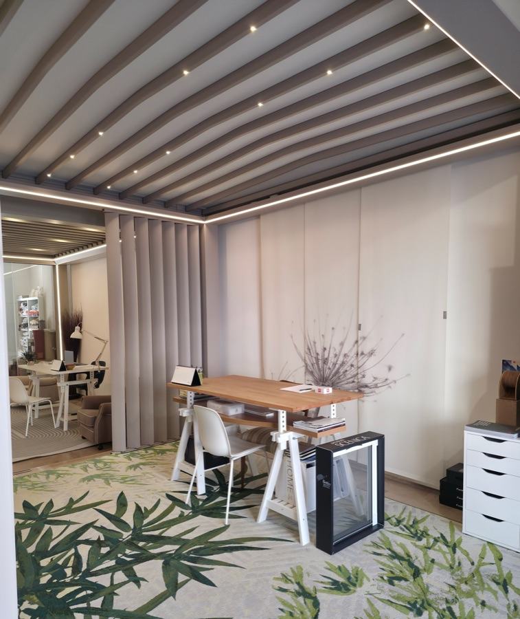
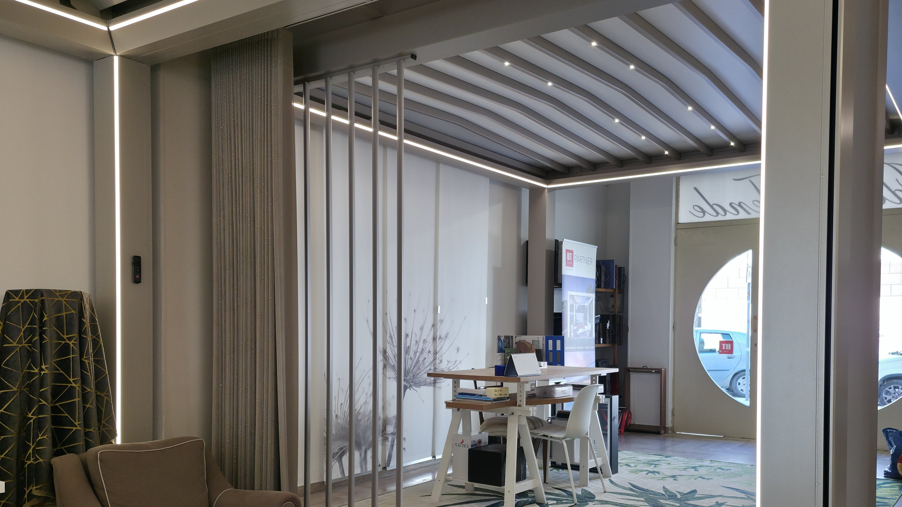
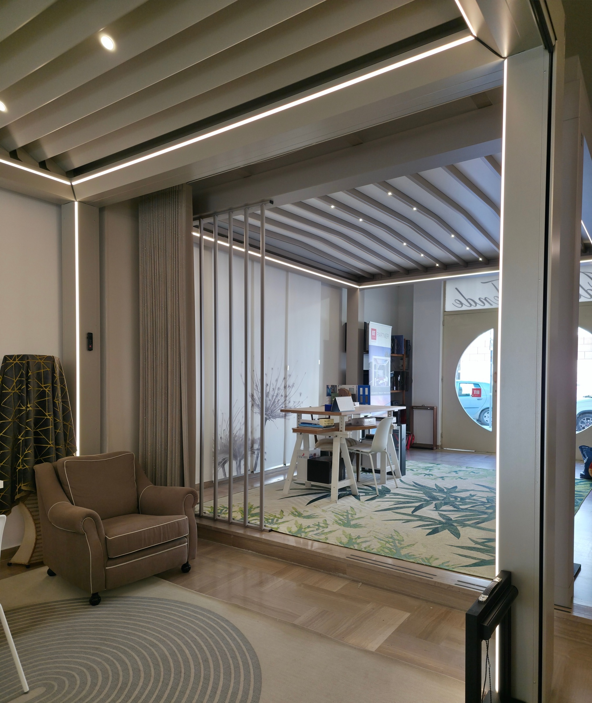
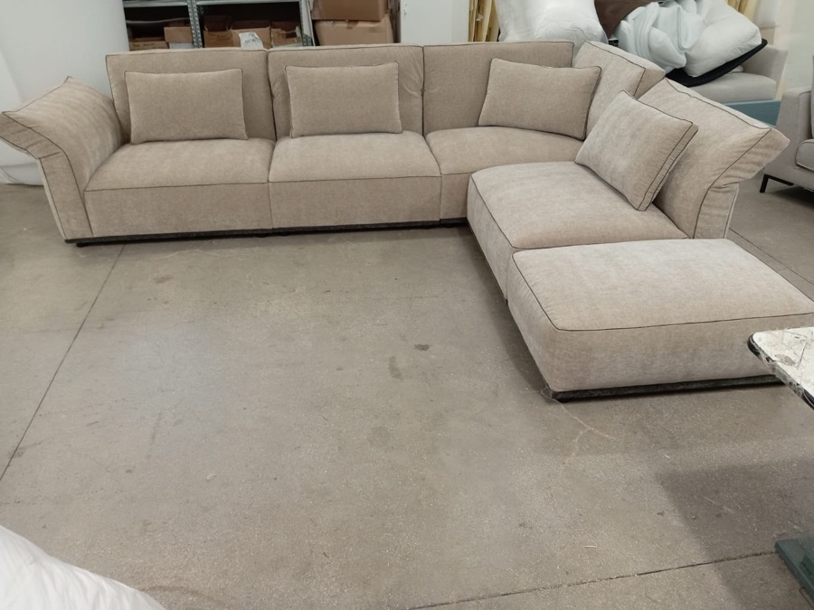

Progetto
Il tavolo dove scegliamo tessuti e soluzioni.

Dal 1998 un'attività di famiglia a Trinitapoli: un negozio, un laboratorio e una squadra che viene a casa tua con i campionari in mano.

Dal 1998, IDEAL TENDE è una realtà a conduzione familiare che mette passione, esperienza e professionalità al servizio della vostra casa.
Da quasi 30 anni accompagniamo le famiglie nella scelta delle migliori soluzioni per arredare e valorizzare ogni ambiente, trasformando ogni spazio in un luogo unico, accogliente ed elegante.
Crediamo che ogni casa racconti una storia e che siano i dettagli a renderla speciale. Per questo, selezioniamo con cura materiali, tessuti e soluzioni capaci di coniugare design, qualità e funzionalità, offrendo un servizio attento e personalizzato, dalla scelta dei prodotti alla realizzazione del progetto.
La nostra forza è la tradizione familiare, unita alla continua ricerca di nuove idee e tendenze, per proporre soluzioni che rispecchino lo stile e i desideri di ogni cliente.
Vieni a trovarciTende esposte, campionari di tessuti, una pergola con luci e lamelle montata in negozio e un tavolo dove progettare insieme.

Il tavolo dove scegliamo tessuti e soluzioni.
Lamelle e luci da provare in negozio.
Tessuti e pieghe da vedere montati.
Campionari per tende, cuscini e divani.
Ogni stanza ha la sua luce e il suo stile. Per questo ti consigliamo solo dopo averla vista.
Confezione, rifoderatura e montaggio passano dalle nostre mani, dal laboratorio fino a casa tua.
Una regolazione, un telo da cambiare, una tenda in più: siamo a due passi.
Tende a rullo e binari montati con precisione.

Dove divani e poltrone tornano nuovi.
Pergole e coperture installate dalla squadra.
Ogni tenda sistemata a mano, piega per piega.